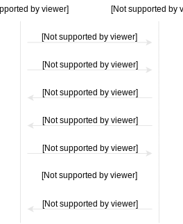

mikhail.vorozhtsov@gmail.com
Protocol

def runTransfer(id: BucketId, remoteAddr: SocketAddr): Offset = {
file = openFile(id)
try {
committedOffset = file.size()
socket = connect(remoteAddr)
try {
socket.write(id ++ commitedOffset)
answer = socket.read(2)
if (answer != "OK")
throw Exception("Invalid bucket/offset combination")
loop {
buf = socket.read()
if (buf.isEmpty)
return committedOffset
file.write(buf)
file.sync()
committedOffset = commitedOffset + buf.size
socket.write(committedOffset)
}
} finally {
socket.close()
}
} finally {
file.close()
}
}
Typed asynchronous request-response contract
Start(BucketId) ~> Started | AlreadyStarted
Stop ~> ()
Progress ~> NotStarted | Intializing | Transferring(Offset)
Contract handling
bucketId := Some(loopUntilSome {
contract.nextRequest match {
case Start(id, req) =>
req.respond(Started)
Some(id)
case Stop(req) =>
req.respond()
exit
case Progress(req) =>
req.respond(NotStarted)
None
}
})
loop {
contract.nextRequest match {
case Start(_, req) =>
req.respond(AlreadyStarted)
case Stop(req) =>
req.respond()
exit
case Progress(req) =>
if (initialized)
req.respond(Transferring(committedOffset))
else
req.respond(Initializing)
}
}
Transfer handling
id = waitUntilSome(bucketId)
file = openFile(id)
try {
committedOffset := file.size()
socket = connect(remoteAddr)
try {
socket.write(id ++ commitedOffset)
answer = socket.read(2)
if (answer != "OK")
throw Exception("Invalid bucket/offset combination")
initialized := true
loop {
buf = socket.read()
if (buf.isEmpty)
exit
file.write(buf)
file.sync()
committedOffset := commitedOffset + buf.size
socket.write(committedOffset)
}
} finally {
socket.close()
}
} finally {
file.close()
}
Putting it together
def runTransfer(contract: Contract[TransferProto],
remoteAddr: SocketAddr): Spawn[Offset] = {
val result = try {
runHandlers(
{ bucketId := None
initialized := false
committedOffset := 0 },
<Contract handling>,
<Transfer handling>)
} finally {
contract.close()
}
return result.committedOffset
}
Scala
main(args: Array[String]): UnitHaskell
main(): IO[Unit]Tracing I/O
def execute(): Unit = {
executeTrace(main().trace())
}
sealed trait TraceIO[A]
object TraceIO {
final case class Done(result: Try[A]) extends TraceIO[A]
final case class Continue[B](action: ActionIO[B],
onSuccess: B => TraceIO[A],
onFailure: Throwable => TraceIO[A])
extends TraceIO[A]
}
def executeTrace(trace: TraceIO[A]): A = trace match {
case Done(result) => result.get()
case Continue(action, onSuccess, onFailure) =>
val actionResult = try {
executeAction(action)
} catch { e =>
executeTrace(onFailure(e))
}
executeTrace(onSuccess(actionResult))
}
Tracing Handlers
def connect(remoteAddr: SocketAddr): Handler[Socket] = {
fd = socket()
try {
loop {
rc = connect(fd, remoteAddr)
if (rc == 0)
return Socket(fd)
if (rc == EINPROGRESS)
wait (Read(fd))
else
throw Exception("Failed to connect")
}
} onEscape {
close(fd)
}
}
Tracing Handlers
sealed trait TraceHandler[A]
object TraceHandler {
final case class Done(result: Try[A]) extends TranceHandler[A]
final case class DoIO[B](action: IO[B],
next: Try[B] => TraceHandler[A],
onExit: () => TranceHandler[Unit])
extends TraceHandler[A]
final case class Wait[B](event: Event[B],
next: Try[B] => TraceHandler[A],
onExit: () => TraceHandler[Unit])
extends TraceHandler[A]
final case class Exit(onExit: () => TraceHandler[Unit])
extends TraceHandler[A]
// State manipulations
...
}
Implementing runHandlers
runHandlers[State](state: State,
handlers: Handler[Unit]*): Spawn[State]
Implementing Spawn
def runSpawn(root: Spawn[A]): IO[A]
def spawn(child: Spawn[A]): Spawn[SpawnThread[A]]
runSpawn {
contract = Contract[TransferProto]
transferThread = spawn(runTransfer(contract, remoteAddr))
...
}